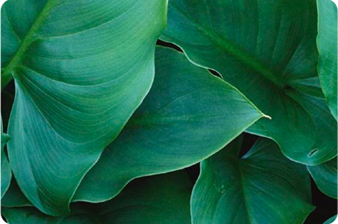
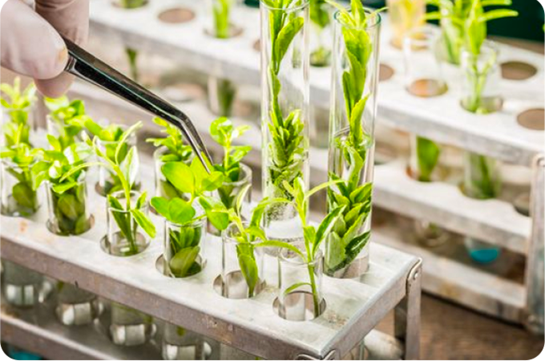

품종개량을 하면
어떤 장점이 있나요?
+

생산성 향상
품종개량은 농산물의 수확량과 생산성을 향상시키는 데 중요한 역할을 합니다. 농업 생산성의 향상은 식량 안보를 강화하고, 인구 증가와 급격한 도시화에 대한 대비책을 마련하는 데 도움이 됩니다.

내성 강화
품종개량은 재배작물의 내성을 강화시키는 데 도움을 줍니다. 이는 새로운 병해충에 대한 저항성이나 극한 기상 조건에서의 생존력을 향상시키는 등 다양한 장점을 가져올 수 있습니다.

품질 개선
품종개량은 농산물의 품질을 개선시키는 데 도움을 줍니다. 예를 들어, 맛과 향이 더욱 풍부해지거나, 보존 기간이 더욱 길어지는 등의 장점을 가져올 수 있습니다.
경제적 이점
품종개량은 농산물 생산과 유통을 효율적으로 할 수 있게 하여, 경제적 이점을 가져올 수 있습니다. 예를 들어, 고가의 수입작물을 대체할 수 있고, 수출 시장을 확대할 수 있습니다.

지속 가능한
지속 가능한
농업
품종개량은 더욱 지속 가능한 농업을 위한 기반을 마련하는 데 도움을 줍니다. 이는 농업의 환경 친화성, 재생 가능 에너지 사용, 그리고 대기오염, 수질 오염, 토양 오염 등을 줄이는 데 도움이 됩니다.